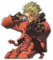
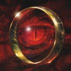
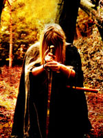
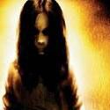

Forums galactiques > Assemblée Galactique : diplomatie officielle > Présentations
| Alphonse la Défonce Respect diplomatique : 20  01/08 ETU 01:23 | Score : 13 Détails
http://www.radioblogclub.fr/open/25840/un_ouf/Noof%20-%20Chanson%20ouf SALUT LES KEUPINS! Je me présente, Alphonse la défonce. Pourquoi la défonce? Bah parce que et bien...je...je...je me fait défoncer Alphonse s'écroula en larme. ET....ET VOUS CROYEZ QUE C'EST FACILE? J'en connais plein moi des gens qui ce sont fait attaqué par des galactubies et qui on eu peur! Mais maintenant j'ai plus peur parce que vous êtes là mes keupins! Pas vrai? On me dit souvent que j'ai un problème mais c'est pas vrai moi je les croit pas, IL MENTENT! Menthe? mmmmh J'ai même écrit un livre: Nous allons vous raconter l'histoire de John l'Eléphant... Ses plus belles péripéties ainsi que ses plus belles rencontres... Laissez vous baiser... Euh bercer par la magie de ce jeune éléphant nommé John... Un soir, le père Noël est arrivé par la cheminée et vu Un hary Covert ( oui oui vous comprendrez pourquoi) et dit: OH OH OH GEANT VERT. Oh oh oh je me suis trompée de réplique!! Je la refais. Le père Noël sorti de la maison et grimpa par je ne sais quel moyen sur le toit de la maison Du hary cover. Il retomba dans la cheminée (et un bleu en plus sur le cul, un!!) et dit: OH OH OH Je suis le père Noel et je viens t'apporter tes cadeaux OH OH OH!! Et tout à coup, il se mit à atchoumer et son crachat alla sur l'une des dents Du hary covert qui remonta dans son cerveau et celui ci gonfla, gonfla... Jusqu'à ce qu'il explose!!! EH PAF!!! Ca fait des Chocapic. Par la suite, le cerveau se coupa en deux pour ne faire qu'une personne. Le père Noel entra dans le Hary covert et vice versa. Voila comment est né John l'éléphant sans dents. Eléphantement. Il me croyait pas, C'est une vrai histoire! Alphonse leva les yeux... Anatole? Anatole la Tafiole c'est bien toi? C'est moi Alphonse! Chambre 223 de l'hôpital psychiatrique galactique, tu te rappel? Aller viens on va ce boire un coup...c'est ou la taverne? | ||
| Anatole la Tafiole Respect diplomatique : 55  01/08 ETU 17:28 | Score : 12 Détails MON Coupaiiiiin !!!
Anatole sauta dans les bras d'Alphonse et le serra de toutes ses forces. Il s dansèrent comme des déments au millieu de l'assemblée. En effet, ils se sont connus à l'Hôpital Psychiatrique des Papillons Roses. Il étaient alors devenus de grands amis, puis un jour, Alf et lui se séparèrent pour mener leurs vie. Anatole était très heureux en ce moment. Jamais il n'avait eu autant d'amis dans sa vie (dont un au tableau de chasse...) Les deux compères allèrent boire un coup au bar. Anatole prit un "Judo Range sans Pus l'peut" Et Alphonse un "Laid de Chaivre de mie et Crémé" Ils trinqièrent en faisant tout renverser à côté. Ils éclatèrent de rire, balançèrent leurs verres et dansèrent en criant des mots qui semblaient être les paroles d'une chanson... | ||
| Albo Respect diplomatique : 9 01/08 ETU 23:27 | Score : 9 Détails Message : diplomatique
Destination : Assemblée galactique Le commandant Albo apparu sur l'image holographique peu à peu, le grésillement allait en diminuant, il allait parler ... "Bonjour à tous, commandants de cette galaxie ... Je remercie cette assemblée d'avoir recencé notre planète ... Nous sortons peu à peu d'une guerre barbare dans notre système, la diplomatie fait suite à la guerre et les 3 peuples de notre système avancent ensembles à présent ... Nous avons fait basculer notre régime et nous pouvons maintenant avancer par voie démocratique : les scientifiques nous promettent bientôt des avancées qui nous permettront d'être présents parmi vous et nos usines marchent à plein régime pour pouvoir vous proposer quelques commerces très bientôt ... Nous recherchons activement quelque Mécène qui pourrait nous guider dans cette galaxie qui apparait à la lecture des archives bien déchirée, notre peuple se pose des questions pour la suite, que l'ouverture de notre système ne nous fasse pas retomber dans cette guerre barbare ... Que paix soit votre Commandants ... Commandant Albo" La lumière s'atténue peu à peu, noircissant l'image du commandant Albo qui disparu totalement ... | ||
| Cornelius Respect diplomatique : 7 02/08 ETU 18:56 | Score : 7 Détails Visez-moi un peu ça, les amis.
C'est pas la preuve que nous sommes un grand peuple, ça ?Franchir les mers pour aller conquérir d'autres territoires, c'est pas rien, quoi, faut pas déconner ! Aller virer quelques tribus stupides pour s'approprier tout c'qu'y nous intéresse, ça c'est une mission ! -Ouais, bon d'accord. -Mais tu vas pas passer tout le voyage à nous soûler comme ça. -Mais regardez-la, cette terre, là-bas, juste pour nous ! -Bon, tu viens, oui ou merde ? ! Pour qui tu te prends ? -Ca vaaaaa... du caaaaalme | ||
| Alastor Respect diplomatique : 22  05/08 ETU 01:57 | Score : 9 Détails Ouverture.
Entrée. Six hommes et femmes. Six des Sept. Vêtus d'un manteau qui les couvre entièrement, chacun d'une différente couleur. Blanc, bleu, rouge, noir, vert, gris. La septième n'est pas présente. Alastor, Marine, Cairos, Marius, Socrate et Arcane. La septième est Dyonides. Les Apostats. Les Exilés, ceux qui furent assez intelligents pour ne pas croire aux mensonges du faux Dieu-Empereur. Ils furent envoyés sur la Pierre Hurlante, une planète prison où les pires criminels et opposants à l'Empire sont envoyés. Regrettable erreur. Alastor en prit le contrôle avec l'aide de ses six frères d'armes. Alastor s'avance. C'est le chef. Celui en blanc. -Assemblée, bonsoir. Nous sommes les Sept Apostats. Notre nouvelle nation est neutre. Vous n'avez pas à vous inquiéter. Nous n'avons qu'une cible et elle n'est pas de votre monde. Marine, celle vêtue de bleu, s'avance vers Alastor. -C'est bon, ils en savent assez. On y retourne. -Je ne souhaitais pas en dire plus de toute façon. Les six personnes se retournent en un seul mouvement, comme une seule entité, et sortent par la grande porte. | ||
| Muad'Hib Respect diplomatique : 5  09/08 ETU 00:46 | Score : 5 Détails *Après cette entrée plus ou moins impressionante, l'assemblée reprend sa respiration et pendant qu'elle s'occupe de nouveau de ses affaires quotidiennes, une ombre pénètre discrètement et vient se faufiler dans un des coins de la pièce. Elle est plutôt petite et porte un long manteau noir qui lui cache les chevilles. Sa tête encapuchonnée semble regarder tout le monde tour à tour comme si elle recherchait quelqu'un... Tout à coup elle s'arrête dans son espionnage de mauvaise augure et glisse sa main sous une de ses manches qui ballote dans les airs.
"Une jeune fille... susurre t'il à lui même, une jolie jeune fille..." L'ombre fait quelques pas et se dirige vers une demoiselle qui attend visiblement quelqu'un. La main de la créature dégaine un coutelas plat et l'élève dans les airs, près à tuer ... BANG ! Le coutelas vole dans les airs et la créature prise au piège se ratatine piètrement et gémit. Un jeune homme blond au ton bronzé venait de tirer. Il s'avança lentement vers la créature et lui soulève son capuchon. "Que fais tu là Flétri ? demande le jeune garçon d'une voix plutôt grave. L'assemblée se tut. Le silence emplit désormais seul la salle car plus personne n'ose bouger. La porte claque de nouveau et le jeune homme a repéré quatre autres Flétris qui ont pénétré. Le temps qu'il détourne la tête, son prisonier lui fit faux pas et lui envoya un violent coup de pied derrière le genou. Il s'étale par terre. "Reviens Zahyr ! crie un Flétri à l'autre bout de la pièce en s'avançant de quelques pas..." Le dénommé Zahyr lance un regard mauvais au jeune garçon et tourne les talons mais avant même qu'il fasse un pas, le jeune garçon fit tournoyer autour de son index son revolver et tira. Il fit mouche évidemment et pendant que les Flétri se demander ce qui c'était produit, le jeune garçondégaina de sa main gauche un autre revolver et tira deux coups, BANG BANG ! Deux flétris s'écroulèrent lamentablement sur le sol . Alors que les deux survivants couraient vers la sortie, le jeune homme lachâ le revolver de sa main droite et dégaina une dangue qui se trouvait sur sa jambière... BANG ! Il tira encore et un troisième flétri s'écroula juste devant la porte. Alors que le dernier s'apprêtait à franchir le pas, la dagua vola à travers la pièce et se ficha dans un pan de la chemise du Flétri qui ne put avancer d'un poil. Alors le jeune homme s'avança vers lui et lui déclara : "Va voir ton chef et dit lui que Muad'Hib est de retour et que tant que lui -c'est à dire moi-même- sera vivant, il sera hors de question de venir troubler la paix de notre ville !" Et sur ce, il décrocha la dague et le Flétri put s'en aller. Le jeune garçon se tourna alors vers l'assemblée qui le regarder toujours avec grand étonnement puis s'avançant vers la gente dame il s'inclina : "Comment vous remercier Muad'Hib ? demanda t'elle, émue. -Appelez moi donc Xash, cela sera amplement suffisant." Le garçon sourit et dévoila une partie de ses dents brillantes. Ses deux yeux vert étaient protégaient par deux petites lunettes foncées. Ses cheveux coiffés en pic étaient longs mais ordonnés et cela lui donnait une allure de vagabond.Et de sa longue redinguote qui balayait le sol à chacun de ses mouvements émanait une sorte de cercle de pouvoir. Il s'inclina à nouveau, fit un clin d'oeil et disparut comme il était venu...* (//-)(-) | ||
| Saaron Respect diplomatique : 2  11/08 ETU 11:42 | Score : 2 Détails Dans un hologramme enflammé se tenait Saaron, l'oeil ténébreux
Bonjour cherrrr Commandantes et Commandants, Je suis Saaron le seul et Unique Seigneur Ténébrrreux de la planète Oriön, qui serrra bientot dominé parrrt mes fideles Orrrcs venant d'un monde trrrès lointains, cerrrtains sont exilés, d'autrrres sont crrréés dans mon Rrroyaume, enfin les Orrrcs ont s'en fou. C'est de moi que je dois parrrler, et bah vous me vairez dans pas longtemps, car je vais prendre un repos de 2 semaines, les guerres pour tous vous dominez c'est vachement lassant, et mon Ancêtre Sauron a même pas réussi, et pis j'en ai ras le bol de devoir fourcher ma langue pour chaque "rrr" que je rencontre ! Mais quel Héritage de merde ! L'hologramme s'éteignit brusquement | ||
| Rotchtar Respect diplomatique : 2  11/08 ETU 15:16 | Score : 2 Détails Une porte s'ouvrit, un homme entra, seul tout seul, mais quel grand homme, qui est-ce, mais oui bien sur!!
Bonjour à vous tous, Petit et moyen ou voir grand, j'en doute... mais bon. Je suis Rotchtar le grand et tout puissant commerçant bon d'accord pas maintenant à l'heure où je vous parle mais bon. Je suis arrivé dans cette galaxie je ne sais trop comment, une forte secousse magnétique ma fait arrivé sur la planète bougé . Mon peuple est pauvre et sans ressource, nous voulons rejoindre une belle coalition pour nous aider à prendre des forces et de l'intérêt dans cette galaxie d'Origine. Mais bon je vous raconterai ma vie plus tard car j'ai une tarte au pomme sur le grill. Au revoir Et sait ainsi que Rotchtar partie de la salle laissant tout le monde bouche B. A je vous est jamais dit qu'il avait l'ère intelligant mais bon son peuple à décidé Qu’est qui faut être nul pour choisir un type pareille. | ||
| Jorn Berïngson Respect diplomatique : 11  16/08 ETU 12:32 | Score : 4 Détails Les portes de l'Assemblée furent poussées par deux bras puissants. Des pas lourds firent claquer les bottes de cuir sur les dalles de pierre. L'étranger de haute stature rabattit sa capuche. Sa cape bleu-gris couvrait ses larges épaules. Il rejeta une mèche de cheveux blondset laissa ses yeux d'un gris d'acier courir le long des rangs. Il portait un tabard beige, oú était cousue de fil d'or la Croix Royale du Soleil, le symbole de la Maisonnée Royale D'Erion. L'homme au visage jeune mais aux tempes et à la barbe déjà grisonnants rejeta sa cape sur une épaule, laissant voir des bras musclés portant des protège-bras de cuir, frappés de la Croix du Soleil, une version moins compliquée de la Croix Royale, et portée par les nobles d'Erion. A son coté droit pendait une épée. Son poignet gauche était orné d'un bracelet de mailles entrelacées, un alliage d'argent et de plastacier, qui désignait son porteur comme Chevalier Hirdion. Il posa ses grandes mains sur le pupitre et prit la parole d'une voix puissante et claire. Il avait un accent dur et roulait quelque peu les "r":
Salutations, commandants d'Origine. Je suis Jorn Berïngson, Chevalier Hirdion et messager de monseigneur Ymïng Berenson, roi d'Erdion. Il vient d'accéder au tröne après la mort de son père Beren Halvdanson. Erion est une planète au climant froid et inhospitalier. Ymïng souhaite trouver de nouveaux territoires plus cléments pour notre peuple dont le nombre va grandissant. Il m'a désigné pour être son messager auprès des peuples d'Origine. Que tous les commandants de bonne foi puissent venir à nous en paix, et que les autres sachent que nous pouvons être aussi durs que la coque de nos vaisseaux ou la lame de nos épées, si cela est nécessaire. | ||
| W. Harrold Respect diplomatique : 1  24/08 ETU 14:49 | Score : 6 Détails A 14h44 de l’après-midi, lors d’une conférence dans la salle de présentation d’origine, les portes souvirent, y laissant entrer un petit homme tout jaune se diriger ver le panneau d’affichage, pour y coller une feuille.
Le travaille finit, le petit homme jaune se retourna, et aperçu tous ces regards(provenant des Commandants installés dans les tribunes de la salle) se tourner vers lui. Happerait, il prit ses jambes à son cou, et partie le plus vite possible. Les Commandants surprit, alla voir la petite feuille placardée sur le panneau. D’ou, on pouvait y lire : Nom : W. Harrold Age : 39 ans Profession : ancien inspecteur de la sécurité à la centrale nucléaire (secteur 7G) Particularité physique : obèse et chauve. Phrase célèbre : "D'oh", "Mmmm (suivit d'un nom d'aliment)" Description : W. Harrold est censé représenter un Commandant moyen. Ses activités favorites sont : boire, manger, regarder la télévision et dormir. Il est très friand de bière et de donuts. Faits marquants : - Il a changé deux fois de nom une fois en Max l’Impuissant et l'autre fois en Tommer Thompomme. - Il a prit du poids pour être considéré comme handicapé et pouvoir travailler chez lui. - Il a été dans l'espace. - Il s'est battu avec l'ancien Commandant Bernard bozh. - Il a été licencié plusieurs fois de la centrale mais a toujours retrouvé son boulot. - Il s'est marié avec une autre femme à « Loppoil » car il était saoul et a prit la fuite. - Il a retrouvé sa mère qu'il croyait morte depuis des années. - Il s'est engagé dans une troupe de monstre itinérante. - Il s’est retrouvé je ne sais comment, Commandant de la planètes « Pig Flop » | ||
| Bluesky Respect diplomatique : 5  28/08 ETU 12:33 | Score : 5 Détails Le commandant Bluesky était général dans l’armé Esque.
Dirigent 250 soldats. Il était réputé pour être le plus rapide sur le champ de bataille. Médailler de la médaille d’honneur et de la médaille du courage il est maintenant commandant. Au cour d’un voyage galactique son vaisseau et son escadres tombèrent dans un trou noir qui les emmenas dans une galaxie inconnu Origine. Au cour des années le commandant Bluesky a développé de nombreuses technologies a s’avoir l’hyperfusion. Il put aller se présenter à l’assemblé galactique. « Salutations a tous les commandants de cette galaxie. Je me présente Bluesky. Je suis marchand. Vous en serrer pas plus sur moi. Merci et au revoir. » | ||
| Tessa Respect diplomatique : 5  31/08 ETU 13:38 | Score : 4 Détails Un sentiment glacial envahie l'univers et de tout les êtres pensant, ils entendirent un refrain murmuré une unique fois.
Édifiez vos toits de bois mort, Cachez vous derrière vos murs de pierres mortes, Et composez vos rêves de pensées mortes, Réveillez vous, pleurant, riant et chantant, Je reprendrai ce que vous m'avez volé, En arrachant la peau de vos os morts. L'illusion disparu alors que le frisson s'installa. | ||
| Alnia. Respect diplomatique : 867  31/08 ETU 14:14  | Score : 1 Détails Ouais ! Elle c'est ma keupine, même si je la connais pas !
J'l'adore déja ! | ||
| Inamor Sarec Respect diplomatique : -54  31/08 ETU 15:12 | Score : -4 Détails Toutes des sadiques !
|
Forums galactiques > Assemblée Galactique : diplomatie officielle > Présentations